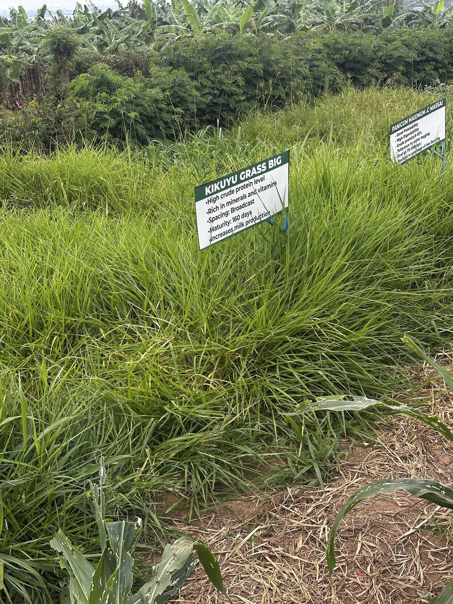
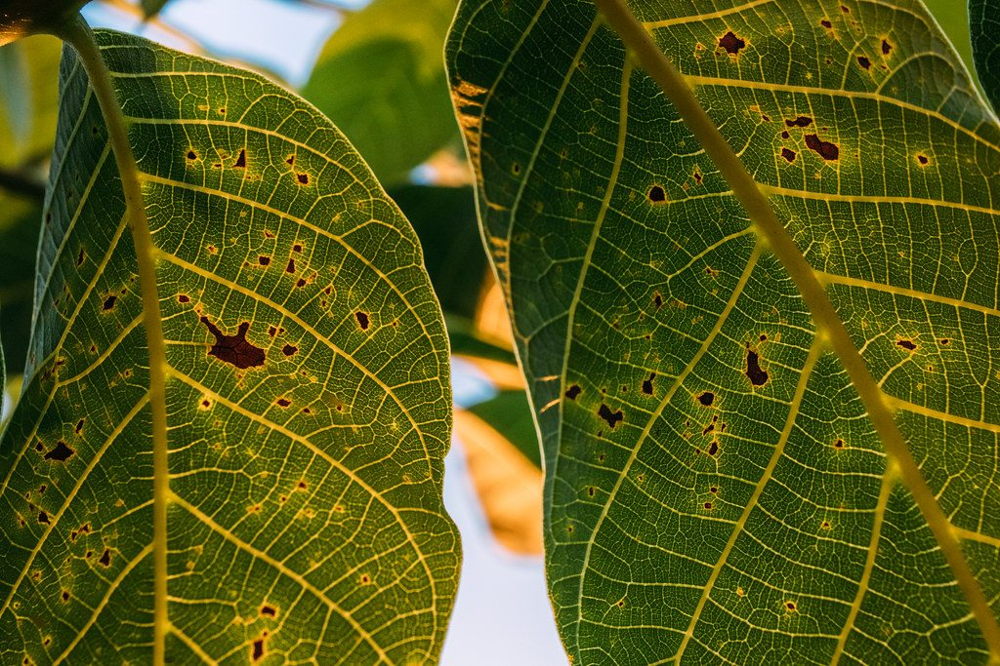
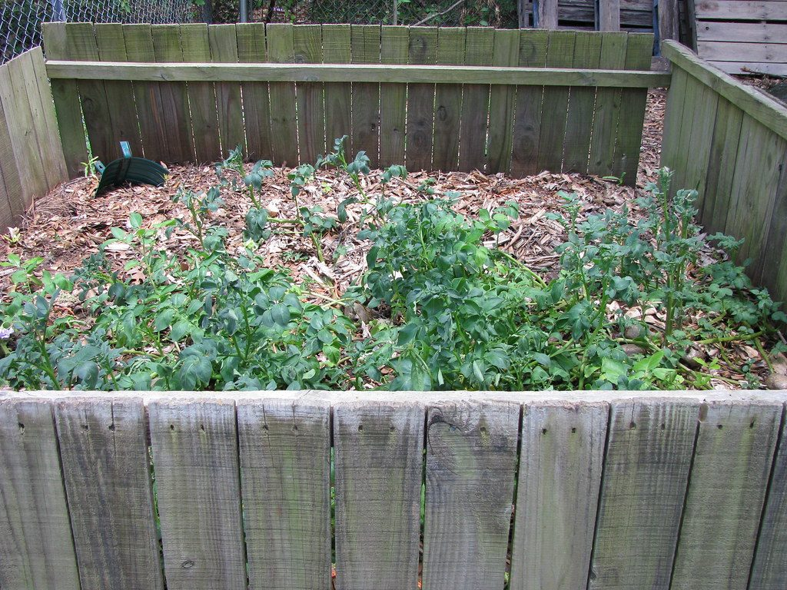
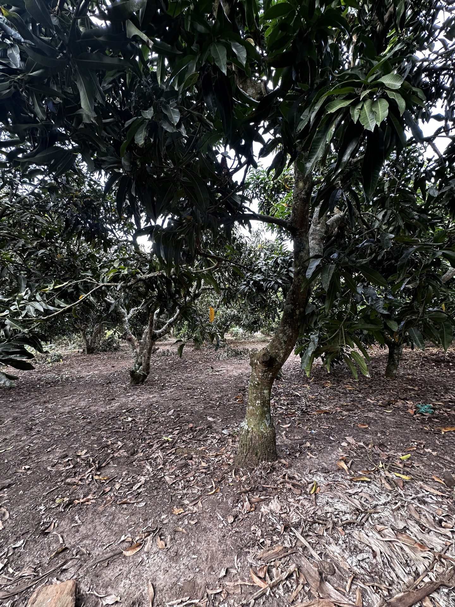
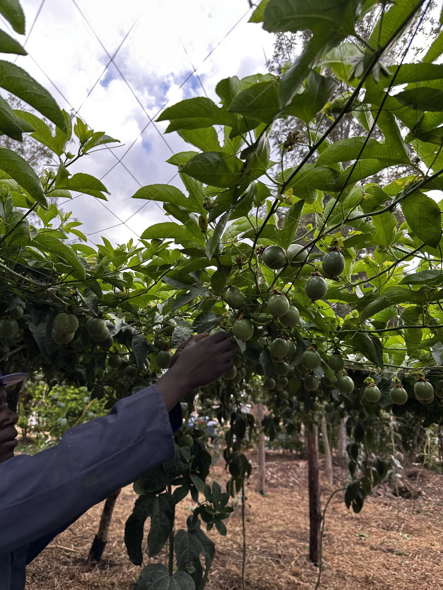

Draft in preparation
Choosing clean banana planting material
Why the sucker you dig from a neighbour's garden may already be carrying your next problem — and what a macro-propagated plantlet changes about your first three years.
Short, practical pieces on what we are doing this season and why — written by people who have to live with the results.
The articles below are the first set planned. Each one is a real topic drawn from the farm's own practice — the text is being drafted with the Director for approval before it goes live. New pieces will be added here over time, and can be published from the farm's own account once the site is handed over.
Draft in preparation
Why the sucker you dig from a neighbour's garden may already be carrying your next problem — and what a macro-propagated plantlet changes about your first three years.
Draft in preparation
How to sample a field properly, how to read the report you get back, and how to turn it into a fertiliser decision that saves money rather than spending it.

Draft in preparation
Siting, stocking, protection and the first harvest — the practical version, from an apiary of 86 hives sitting on a fifth of an acre.

Draft in preparation
Pasture establishment, conservation and the planning you have to do in the wet months if you want milk in the dry ones.

Draft in preparation
From the plant clinic: the symptoms farmers most often read wrong, what they actually indicate, and what to do instead of reaching for a spray.

Draft in preparation
Building good compost from what the farm already produces, and how much of the fertiliser bill it can realistically replace.
Draft in preparation
Blocks, spacing, water and access — the decisions that look like details on day one and define your workload for a generation.

Draft in preparation
Seven enterprises on fifteen acres: how they were chosen, how they feed each other, and how to work out the right mix for your own piece of land.

Draft in preparation
What a macro-propagation nursery costs to set up, what it can earn, and the mistakes that close most of them in the first year.
We will send new pieces as they are published, along with training dates and plantlet availability. A few emails a year, nothing else.